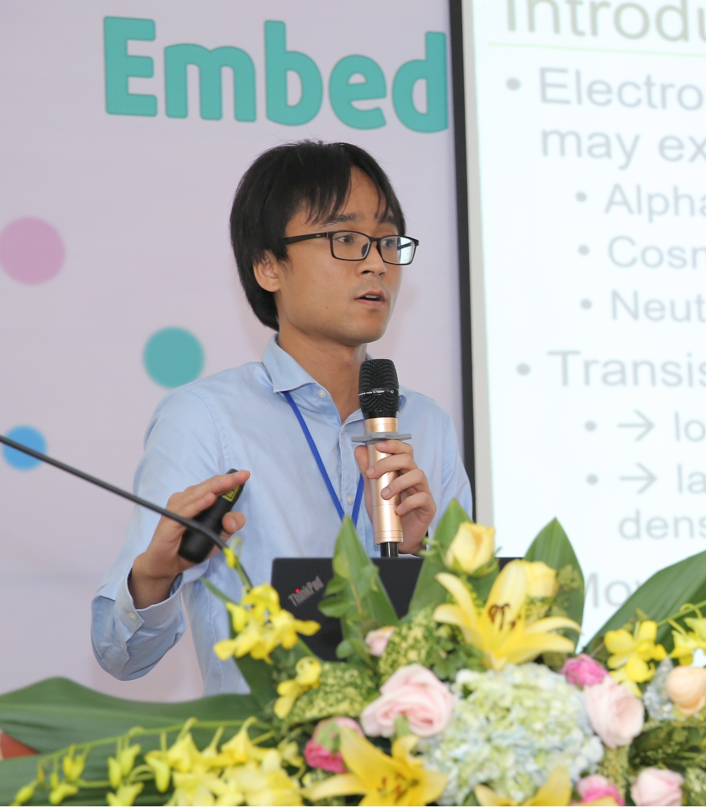

|
Khanh N. Dang
|
 |
Khanh N. Dang, Ph.D.
VNU Key Laboratory for Smart Integrated Systems (SISLAB),
VNU University of Engineering and Technology (VNU-UET),
Vietnam National University, Hanoi (VNU)
Address: 144 Xuan Thuy Rd., Cau Giay District, Hanoi, Vietnam
Office: Building E4 (room 2.1)
Phone: +84-243-754 9664 (office)
Email:
khanh.n.dang [@] ieee.org [or]
khanh.n.dang [@] vnu.edu.vn
|
News
I will be a representive on be half of Vietnam IEEE CAS (Circuit and System Society) at the 2nd IEEE SEACAS (IEEE SOUTH EAST ASIA WORKSHOP on CIRCUITS AND SYSTEMS) in ITENAS, Bandung, Indonesia.
Website of MCSoC 2019 is online! Check it out here!
MCSoC-2018 has finished! Thank you and see you at MCSoC-2019 in Singapore!
MCSoC-2018 has completed its camera-ready paper submission and registration. See you soon in Hanoi.
Work
Researcher/Lecturer, VNU Key Laboratory for Smart Integrated Systems (SISLAB), VNU University of Engineering and Technology, Vietnam National University, Hanoi (VNU), 2017 - present.
Research Assistant/Teaching Assistant, The University of Aizu, 2014-2017
Researcher, SISLAB, Vietnam National University, Hanoi, 2011 - 2014.
Intership, Dolphin Vietnam Inc., 2010-2011
Education
Ph.D. in Computer Science, The University of Aizu, Japan, 2017 (advisor: Prof. Abderazek Ben Abdallah)
M.Sc. in Information Systems & Technology, University of Paris-XI, France, 2014
B.Sc. in Electronics & Telecommunications, VNU University of Engineering and Technology, Vietnam, 2011
|